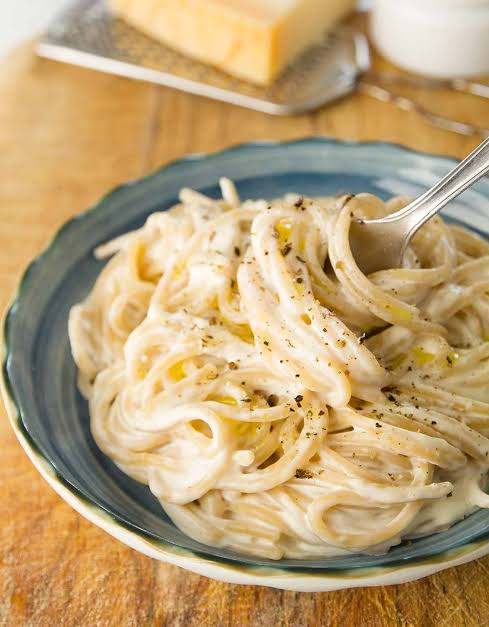

Pasta

Description:
Pasta is an ancient dish originating from Italy. The simplicity of the dish has made it popular up to this date!
ingredients:
- Dry pasta
- Butter
- Minced garlic
- Chopped fresh parsley
- Salt and Pepper
- Cayenne pepper
- Parmesan cheese
Steps
- Gather all ingredients.
- Bring large pot of lightlty salted water to boil. Cook pasta for 8 to 10 minutes
- Metl butter with garlic very slowly on lar skillet. Season with parsley, sal, black pepper, and cayenne
- Add cooked pasta to skillet and toss until well coated butter.
- Serve with Parmesan cheese.